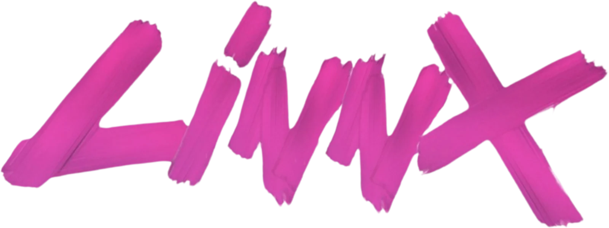

Melodias etéreas
Melodias etéreas e progressivas, que sobem devagar e levam a pista junto.
O som é o do set ao vivo dela. Dá para ligar e desligar a qualquer momento.
São Paulo · DJ e produtora

Progressive trance ✕ acelerado
01 · Sobre
Minhas tracks combinam melodias etéreas e progressivas com o ritmo pulsante e contagiante da biomecânica, criando uma experiência musical única e energizante.
Minha paixão pela música eletrônica me move a buscar sempre a inovação e a perfeição em minhas apresentações. Dedico-me a criar sets criativos e dinâmicos que farão você dançar do início ao fim.
02 · A viagem
Melodias etéreas e progressivas, que sobem devagar e levam a pista junto.
Linhas de baixo intensas e o ritmo pulsante e contagiante da biomecânica.
Sintetizadores poderosos e vocais emocionantes. Cada set é uma história contada através da música.
Um estado de euforia e conexão com a pista de dança, do início ao fim.
03 · Ao vivo
Prepare-se para ser transportado para um universo de sensações.
04 · Retrato
Cada set é uma história contada através da música.
05 · Press kit
Logo, fotos, release e vídeo, prontos para flyer, line-up e redes. Baixe um por um ou o pacote inteiro.
Sou a Linnx, uma artista emergente de São Paulo que traz uma mistura explosiva de progressive trance e acelerado. Minhas tracks combinam melodias etéreas e progressivas com o ritmo pulsante e contagiante da biomecânica, criando uma experiência musical única e energizante.
Prepare-se para viajar por paisagens sonoras vibrantes, com linhas de baixo intensas, sintetizadores poderosos e vocais emocionantes. Cada set é uma história contada através da música, levando você a um estado de euforia e conexão com a pista de dança. Minha paixão pela música eletrônica me move a buscar sempre a inovação e a perfeição em minhas apresentações. Dedico-me a criar sets criativos e dinâmicos que farão você dançar do início ao fim.
Se você busca uma experiência musical única e inesquecível, me encontre nas pistas e prepare-se para ser transportado para um universo de sensações através da minha conexão com a música e com a pista.
06 · Contratar